Bind a Report to a Join-Based Federated Data Source
This topic describes how to create a federated data source that joins data from multiple data sources into a single query.
Create a Report and Data Sources
Add a SQL data source that provides one data table.
Add an Excel data source that provides the other data table.

Create Data Federation and Bind the Report to It
Click the report's smart tag, expand the Data Source property's drop-down menu, and click Add New DataSource.
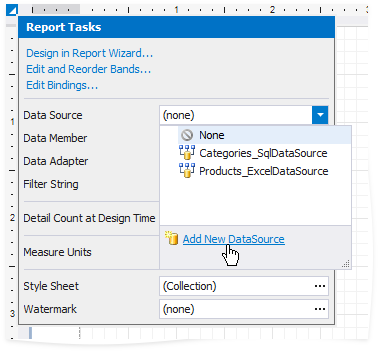
In the invoked Data Source Wizard, select Data Federation and click Next.

On the next page, click Add Query.

In the invoked Query Builder, drag and drop the table from the SQL data source onto the design surface.

Drag and drop the Excel data source onto the design surface. In the invoked Join Editor, select the Inner join type and create a relationship based on the key field.
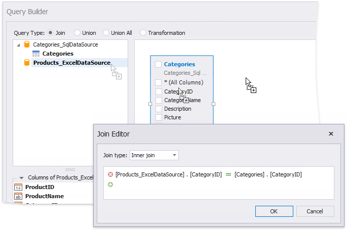
Enable checkboxes for the data fields you want to include in the query result set.
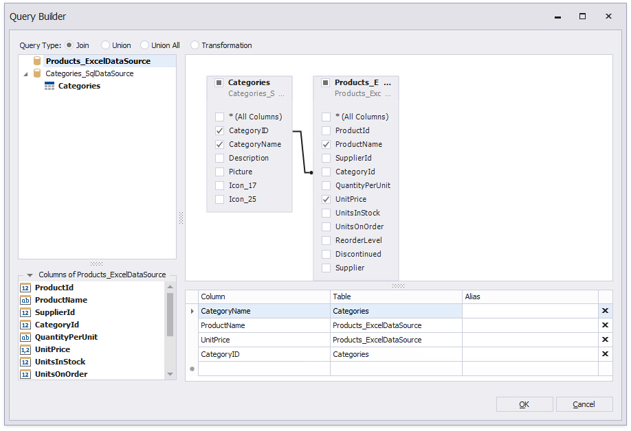
You can specify a different name for a field. Click the field's Alias cell and type the alias.
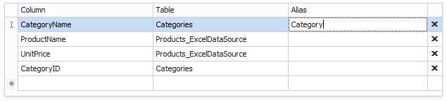
Use the grid's empty line to add an unbound field to a query. Click the field's ellipsis button to invoke the Expression Editor and construct an expression that specifies the field's value.

Click OK to close the Query Builder. Click Finish to complete the Data Source Wizard.
The Wizard creates a new FederationDataSource that includes the single query. This data source becomes available in the Report Explorer's Data Sources node. The Field List reflects the data source structure.

The federated query’s default name equals to the main table’s name (the Categories table in this tutorial). You can rename this query in the Manage Queries dialog. To invoke it, right-click the data source in the Field List or Report Explorer and select Manage Queries in the context menu.
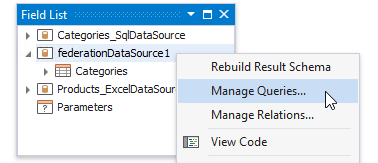
The Manage Queries dialog appears.
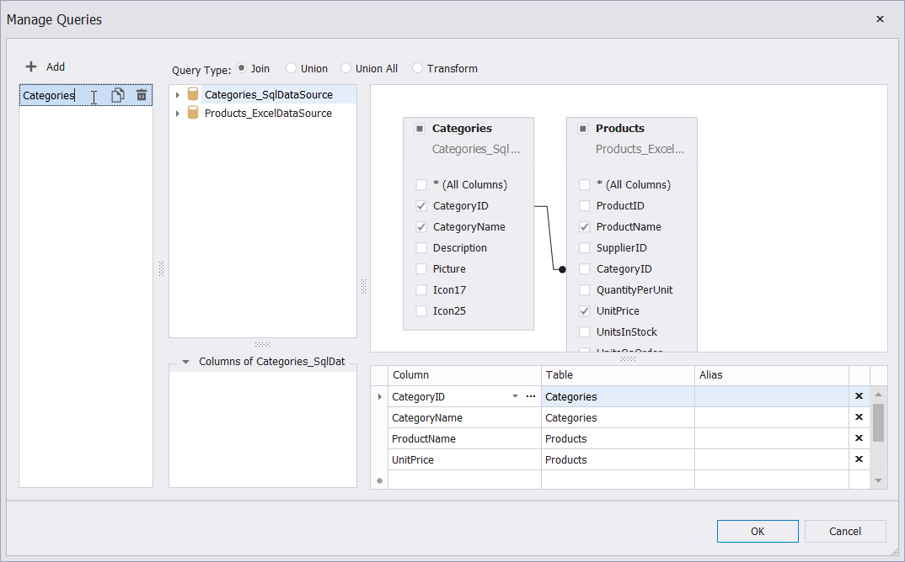
Double-click the table name in the left menu and use the editor to change this name.
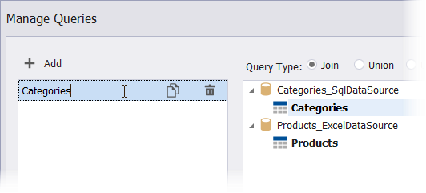
Besides renaming table names, you can also use the Manage Queries dialog to add, modify, or delete queries.
To add a new query, click the Add button in the left menu.
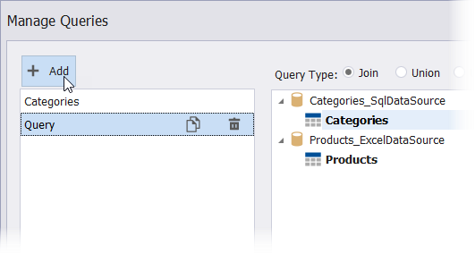
Double-click a table or drag-and-drop it onto the right surface to add the table to the query.
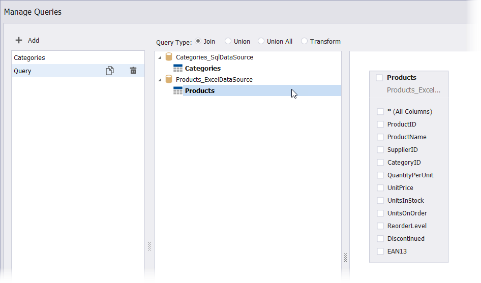
Specify the query type. Then, use the menus on the right to configure data fields for the selected or existing tables.
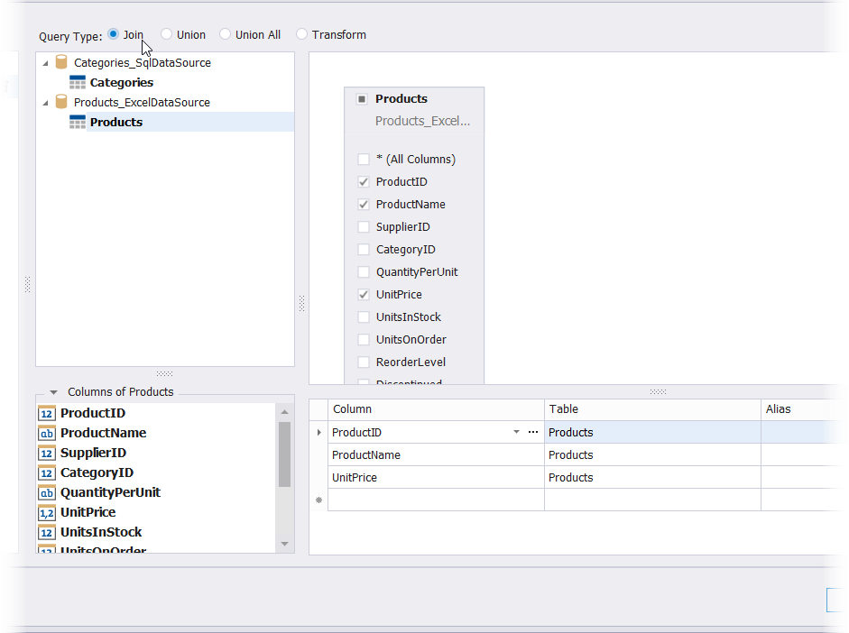
Once you rename the query, update the report's Data Member property.
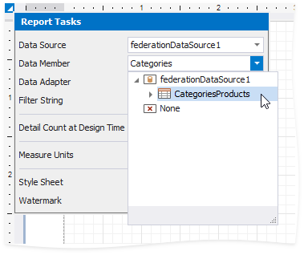
Design the Report Layout
Click the report's smart tag and select Design in Report Wizard.
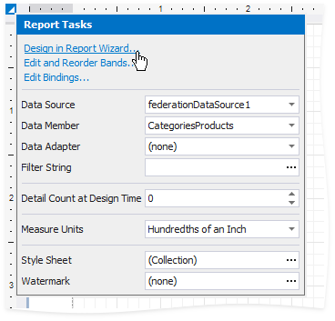
In the invoked Report Wizard, select Table Report and click Next.

Select data fields to display in the report and click Finish. You can also go to the next page to create the layout.
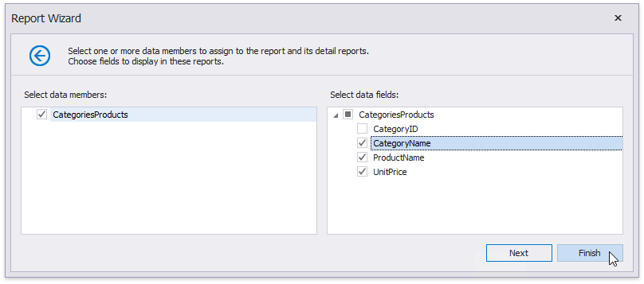
The resulting layout looks similar to the following image:
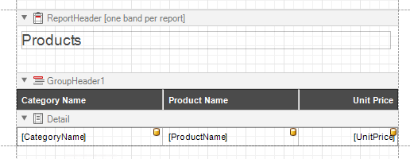
Switch to the Preview mode to see the report document.